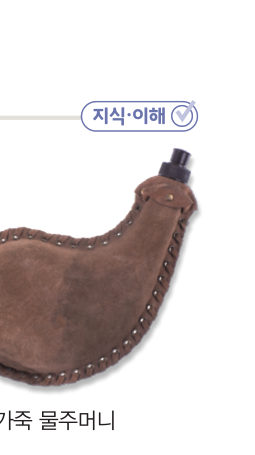

아두이노 실험 보고서 ③ · Ⅳ. 물질의 상태 변화 · 교과서 144~146쪽
젖은 센서는 왜
젖은 센서는 왜
더 차가울까?
항아리 냉장고와 양가죽 물주머니의 비밀! 온도 센서 하나는 마른 휴지로, 하나는 젖은 휴지로 감싸고 바람을 보내 보자. 물과 에탄올이 기화할 때 주변의 열에너지를 흡수하는지 숫자로 확인하자.
실험 정보실험 보고서
실험 제목액체가 기화할 때 주변의 온도 변화
관련 단원Ⅳ-3. 상태 변화 시 열에너지 출입 이용
실험 형태모둠 실험 (4명)
측정 도구아두이노 UNO + 온도 센서 2개
·실험 날짜와 모둠원 이름
실험 목표 액체가 기화할 때 주변의 온도 변화를 측정하여, 기화할 때 열에너지를 흡수함을 설명하고 생활 속 이용(항아리 냉장고, 양가죽 물주머니)과 연결할 수 있다.
1가설 세우기와 변인
1젖은 휴지로 감싼 센서와 마른 휴지로 감싼 센서에 같은 바람을 보내면 어느 쪽 온도가 더 낮아질까? 까닭과 함께 예상해 보자.
2같게 해야 하는 변인을 모두 골라 보자.
2준비물과 회로 연결
준비물 아두이노 UNO, USB 케이블, LM35 온도 센서, 써미스터(10 kΩ)와 10 kΩ 저항(또는 아날로그 온도 센서 모듈), 브레드보드, 점퍼선, 휴지, 고무줄, 물(교실 온도와 같은 물), 에탄올(소독용), 스포이트, 부채 또는 작은 선풍기, 노트북(크롬), 보안경
3실험 방법
- 두 센서를 공기 중에 나란히 두고 1분 동안 값을 보며 보정값을 정해 두 센서가 같은 값을 나타내게 한다.
- 센서 1(LM35)과 센서 2(써미스터)의 감지부를 같은 크기의 휴지로 한 겹 감싸고 고무줄로 묶는다. (센서 1: 마른 휴지 / 센서 2: 젖게 할 휴지)
- [▶ 자동 기록 시작]을 누르고 1분 뒤, 스포이트로 교실 온도와 같은 물을 센서 2의 휴지에 적신다.
- 두 센서에 같은 거리에서 바람을 보낸다. 6분까지 기록한다.
- (더 해 보기) 휴지를 새것으로 바꾸고 물 대신 에탄올로 같은 실험을 한다.
⚠️ 에탄올은 불이 잘 붙으므로 불꽃 가까이에서 사용하지 않고, 환기한다. 물이 아두이노와 브레드보드에 떨어지지 않도록 센서 전선을 길게 빼서 실험한다.
4측정하기 — 실시간 기록
5결과 정리
마른 센서와 젖은 센서의 온도 차이가 가장 클 때: 약 ℃ 차이 ( 분)
젖은 센서(센서 2)의 가장 낮은 온도: ℃
1온도가 더 낮아진 쪽은 이고, 이는 물이 했기 때문이다.
2(더 해 보기) 물 대신 에탄올을 적셨을 때 온도는 .
6결론과 토의
1결론 이 실험으로 알게 된 사실을 ‘기화’, ‘열에너지’, ‘주변의 온도’를 넣어 정리해 보자.
2블록 연결 이 결과로 항아리 냉장고에서 흙에 물을 뿌려 젖은 상태를 유지하는 까닭을 설명해 보자.
3프놈펜의 우기(습도가 매우 높은 날)에 같은 실험을 하면 온도 차이는 .
7스스로 평가 · 선생님께 한마디
| 평가 항목 | 스스로 평가 |
|---|---|
| 보정하고 변인을 통제하여 공정하게 비교했다. | |
| 실험 결과를 생활 속 예와 연결해 설명했다. | |
| 에탄올을 안전하게 다루었다. |
💬실험하면서 어려웠던 점, 새로 알게 된 점, 선생님께 하고 싶은 말을 자유롭게 써 주세요.
제출학생 정보 · 제출하기
보고서를 다 쓰면 제출해요. 측정 기록(시간·온도)도 함께 선생님 스프레드시트(중1 탭)에 저장돼요.